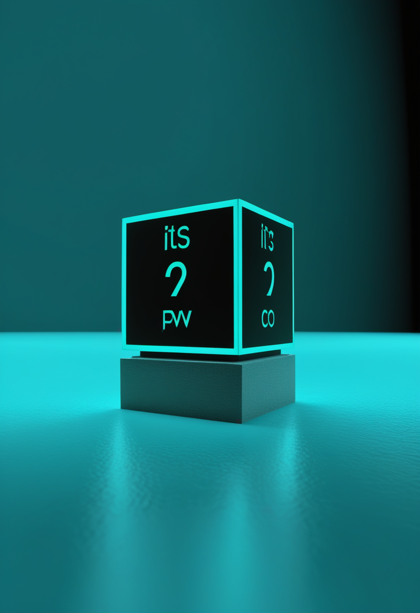

水曜日の便り。DRC(コンゴ民主共和国)のブンディブギョ型エボラは、WHOが8/1(土)に「例外的なペース」で悪化していると改めて警鐘を鳴らす事態となった ― 直近のDON614(7/30時点)による確定数は国内3,605例・死者1,587人(致死率44%)、震源地イトゥリ州(全体の88%)を含む5州49保健地区に拡大し、33保健地区で伝播が継続中。8/18にはIHR緊急委員会が招集される予定で、事態のさらなるエスカレーションが懸念される局面にある。命の章では、Biogenが「Spinraza」後継の新薬salanersenの第3相3試験を始動する一方、ライバルのRoche/中外は抗ミオスタチン抗体emugrobartのSMA開発中止を正式発表、英国は新生児スクリーニングを予定より3カ月前倒しで開始する。自由の章では、中国が7省庁横断の「BCI国家戦略」を始動しNeuroXessチップでチェス実演を披露、AppleはVision Proの視線トラッキングで電動車椅子操作への対応を進め、Synchronは2026年のFDA承認申請に向けたピボタル試験の準備を進める。基盤/公衆衛生では、DRCエボラの拡大と並行し米国の麻疹も週53例増でユタ・アリゾナ・ワシントン各州の流行が続く。畏敬の章では、ジェイムズ・ウェッブ望遠鏡がbeta Pictoris系に隠れていた第3の巨大惑星を発見し、CaltechとOratomicは高い符号化率を持つ新量子誤り訂正符号「Mitten Codes」を発表した。そして美の章では、Meta FAIRが全脳活動を70,000ボクセル解像度で予測するAI「TRIBE v2」を公開する一方、大規模再評価レポートは全脳エミュレーションの実現になお30〜40年を要すると結論づけた ― 警鐘と前進が同時に進む一日となった。
WHOは8/1(土)、DRCのブンディブギョ型エボラ流行が「例外的なペース」で悪化していると改めて警鐘を鳴らした。直近のDON614(7/30時点)による確定数はDRC国内3,605例・死者1,587人(致死率44%)で、震源地イトゥリ州(全体の88%)を含む5州49保健地区に拡大し、33保健地区で伝播が継続中。8/4号で報じた週間過去最多(疫学週30・567例)に続き、WHOは今回「例外的なペース」という異例の表現で悪化を改めて強調した。治療センターにはベッド30床・マットレス38枚が追加供給され収容能力が80床に拡充されたが、8/18にはIHR緊急委員会が招集される予定で、事態のさらなるエスカレーションが懸念される局面にある。
Biogenは新規SMA治療薬「salanersen」について、SOLAR(15〜60歳対象)・STELLAR-1(生後42日以内の発症前診断児30人対象)・STELLAR-2(無症候性対象のシャム対照試験)の3本からなる第3相試験プログラムを開始したとMDA 2026カンファレンスで発表した。年1回投与での有効性・安全性を検証し、数カ月毎の反復投与が必要な現行のSpinrazaより利便性の高い後継薬を目指す。
Rocheとその子会社Genentechは3月、抗ミオスタチン抗体emugrobart(GYM329)のSMA向け開発を中止すると発表した。Evrysdiとの併用を検証した第II/III相MANATEE試験(259人登録)で安全性上の懸念はなかったものの、期待された筋肉量・運動機能の一貫した改善が確認できなかったための決定で、試験参加者はEvrysdi単独治療へ移行する。
英国政府は、SMAを対象とする新生児スクリーニングをイングランド全域の評価プログラムとして2026年10月から開始すると発表した。当初予定より3カ月前倒しでの開始となり、まず準備が整った7つの検査施設(新生児の約72%をカバー)で先行実施し、残り6施設は2027年10月から順次対応する。スコットランドは3月23日に既に先行導入している。
SMA治療は新薬開発の「選別」が進み、有望とされたemugrobartの撤退とsalanersenへの第3相投資集中という明暗が分かれた。一方で英国の新生児スクリーニング前倒しのように、早期発見・早期治療という「上流」の体制整備も着実に進み、治療薬と検査体制の両輪で対応が厚みを増している。
中国政府は科技部など7省庁が共同策定した17項目のBCI産業振興ロードマップを始動し、2027年までの臨床応用実現、2030年までに世界的競争力を持つBCI企業2〜3社の育成を目標に掲げた。すでにNeuroXessの脳表面チップを用い、南昌市の患者が外骨格グローブでチェスの駒を持ち上げるなど、2都市間でのチェス対局デモも実現している。
Appleは5/19、Apple Intelligenceのアクセシビリティ機能としてVision Proの高精度視線トラッキングを用いた電動車椅子操作を発表した。Tolt・LUCIの駆動システムに対応し、8方向への移動や停止を視線のみで行える。米ノースウェスタン大学「Project DRIVE」の技術協力を経ており、2026年後半の提供開始を予定している。
Synchronは血管内埋込型BCI「Stentrode」について、2026年中にFDAへの製造販売承認(PMA)申請の前提となるピボタル試験の実施を目指していると報じられた。同社のCOMMAND試験では患者6人全員に重篤な有害事象がなく、2025年11月に確保した2億ドルのシリーズD資金を試験費用に充てる。
BCIは中国の国家主導型「規制と実装の一体化」戦略、Appleの視線トラッキングによる民生アクセシビリティ実装、Synchronの血管内アプローチによる規制承認レースという三様のアプローチが同時並行で進み、埋込型か非侵襲かを問わず「臨床から実用へ」の移行が加速している。
WHOは8/1(土)、DRCのブンディブギョ型エボラ流行が「例外的なペース」で悪化していると改めて警鐘を鳴らした。直近のDON614(7/30時点)ではDRC国内確定3,605例・死者1,587人(致死率44%)で、震源地イトゥリ州(全体の88%)を含む5州49保健地区に拡大し、うち33保健地区で伝播が継続中。
WHOはエボラ治療センターにベッド30床とマットレス38枚を追加供給し、収容能力を80床に拡大したとUN Newsが報じた(ブテンボの新センターとは別施設)。8/18にはIHR緊急委員会の会合が予定されており、それに先立ち更新版の迅速リスク評価が準備されている。
CIDRAP(CDCデータ、7/30時点)によれば、米国の麻疹は前週比53例増加し、内訳はワシントン州+7例(計53例)、アリゾナ州+1例(計120例)、ユタ州は新規報告なく514例で全米最大のアウトブレイクを維持した。2026年の年間確定数はすでに2025年の年間実績(2,289例)を7カ月で上回っており、米国が麻疹の疾病排除ステータスを失う可能性が指摘されている(要確認:最終判定はPAHOの審査待ち)。
DRCエボラは「例外的ペース」との表現通り、8/18のIHR緊急委員会招集という制度的エスカレーションに至った一方、現場では治療センターのベッド増設という地道な対応が続く。米国麻疹も並行して悪化の一途をたどり、記録的な流行と排除ステータス喪失のリスクが公衆衛生上の二正面の課題として浮上している。
NASAのジェイムズ・ウェッブ宇宙望遠鏡は、beta Pictoris系の既知の惑星bの大気を観測中に、同系に3つ目の巨大惑星「beta Pictoris d」が隠れていることを発見した(7/15発表)。地球から63光年の位置にあり、明るいデブリ円盤の中に埋もれていたため十年以上検出を逃れていたが、メタン・一酸化炭素・水蒸気の吸収スペクトルから存在が確認され、チリのVLTによる独立観測と過去11年分のアーカイブ画像でも裏付けられた。
中国の火星探査車「祝融号」が着陸したユートピア平原の観測データから、百万年スケールで存在したとみられるヘスペリア代の海洋の証拠となるマンガン酸化物が確認されたとする論文がNature Communications誌に掲載された(要確認:詳細な掲載日)。祝融号は2022年5月以降通信途絶が続くが、蓄積データの解析が現在も新知見を生み続けている。

Caltechとスタートアップ企業Oratomicは8/3、非可換群構造を用いた新しい量子LDPC誤り訂正符号「Mitten Codes」を発表した。975個の物理量子ビットで195個の論理量子ビットを実現する20%という高い符号化率が特徴で、中性原子・超伝導の両プラットフォームに対応するハードウェア設計や、既存手法より最大80万倍高速なコード距離推定ツール「sQetch」も合わせて提示された。
NASA/ESA系では観測データの再解析から新惑星を発見する「見えない発見」、中国では祝融号の過去データ解析による火星海洋史の書き換え、量子計算では符号化率20%という実用化に近づく誤り訂正符号の実証と、いずれも「既存データ・既存資産の掘り下げ」から画期的成果が生まれている点が共通する。
Meta FAIRは3月、動画・音声・言語の入力から人間の全脳fMRI応答を70,000ボクセル解像度で予測するAIモデル「TRIBE v2」を発表した。700人超の被験者から取得した1,115時間超のfMRIデータで学習しており、ゼロショット予測の精度が個々の被験者の実測データを上回る場合もあるという。研究用途の「脳のデジタルツイン」としては現時点で最大規模の実装だが、意識のアップロードとは異なる技術である。
2025年10月に公開された「State of Brain Emulation Report 2025」は、2008年のサンドバーグ&ボストロムによるロードマップ以来の包括的な再評価として、全脳エミュレーションの実現には最低でも30〜40年を要すると結論づけた。神経記録・コネクトミクス・計算論的神経科学のいずれの分野でも、いかなる生物においても全脳規模(全ニューロンの95%以上)の単一ニューロン解像度記録は未達成という。
オクラホマ州下院は3月、AIの「意識」を法的に扱う枠組みを定める法案を94対2の賛成多数で可決した。同様の法案はオハイオ・テネシー・サウスカロライナ・ワシントン・ミズーリの各州でも審議中で、AIが将来的に意識を持つとみなされた場合の権利や法的地位をめぐる議論が、連邦レベルに先んじて州議会で先行して進んでいる。
「個人まるごとのデジタル化」実現はなお数十年単位で遠いとする専門家評価が改めて示された一方、Metaの脳活動予測AIのような限定的な「デジタルツイン」は着実に高解像度化が進み、さらに米国の複数州議会ではAI意識の法的扱いをめぐる立法が理論・技術の先を行く形で進行しており、科学的評価・技術実装・法制度の間で足並みの乱れが目立つ。
2026年8月5日、DRCのブンディブギョ型エボラは、WHOが「例外的なペース」という異例の表現で悪化を改めて警鐘を鳴らす事態となった。震源地イトゥリ州を含む5州49保健地区への拡大が続く中、治療センターは収容能力を80床に拡充し、8/18にはIHR緊急委員会が招集される予定で、事態は制度的なエスカレーションの局面を迎えている。命の現場では、Biogenが新薬salanersenの第3相試験を始動する一方、Rocheはemugrobartの開発中止を確定させ、英国は新生児スクリーニングを前倒しで開始した。自由の分野では、中国の国家戦略・Appleの視線トラッキング・Synchronの規制承認レースという三様のアプローチが同時に前進している。基盤/公衆衛生では、米国の麻疹も週53例増でユタ・アリゾナ・ワシントンの拡大が続いた。畏敬の章では、Webb望遠鏡が隠れていた巨大惑星を発見し、祝融号の過去データが火星の古代海洋を語り、Caltechの新しい量子誤り訂正符号が実用化への距離を縮めた。そして美の章では、Metaの脳活動予測AIが着実に高解像度化する一方、大規模再評価レポートは全脳エミュレーションの実現になお30〜40年を要すると改めて結論づけ、警鐘と前進のあいだで一日が締めくくられた。
では、また明日の朝に。 — JaH